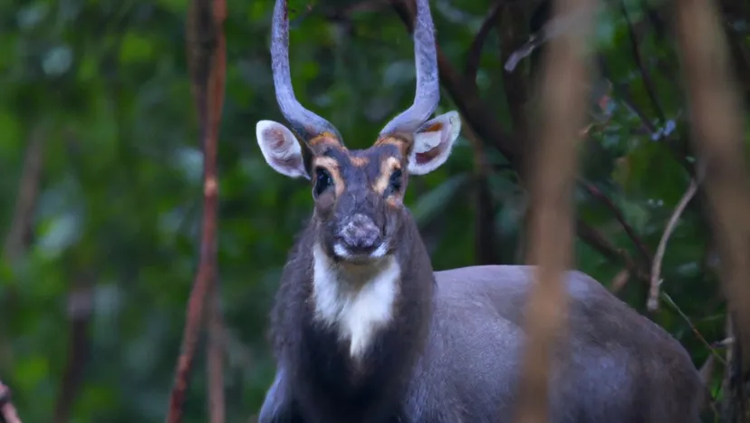

Axolotl - The Smiling Amphibian

The axolotl is a critically endangered amphibian found in lakes near Mexico City. Known for its ability to regenerate limbs, it’s often called the "Mexican walking fish," although it's not a fish at all!
Learn more about Axolotls
Saola - The Asian Unicorn
>
The Saola, also known as the "Asian Unicorn," is a rare antelope-like animal found in the Annamite Mountains of Laos and Vietnam. It was only discovered in 1992, making it one of the most exciting zoological discoveries of the 20th century.
Discover more about the Saola
Saiga Antelope - The Unique-Nosed Wanderer

The saiga antelope is a critically endangered species found in Russia and Kazakhstan. Known for its distinctive, over-sized nose, the saiga is a nomadic animal that roams the Eurasian steppe.
Learn more about the Saiga Antelope
Sea Angel - The Oceanic Butterfly
Sea angels are a type of sea slug that are found in the cold waters of the Arctic and Antarctic oceans. They have a wide geographic range, from polar sea ice regions to tropical waters near the equator, but are believed to be victims of ocean acidification.
Discover more about Sea Angels